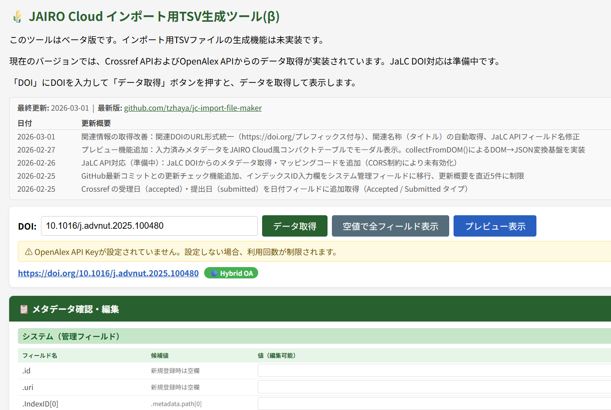
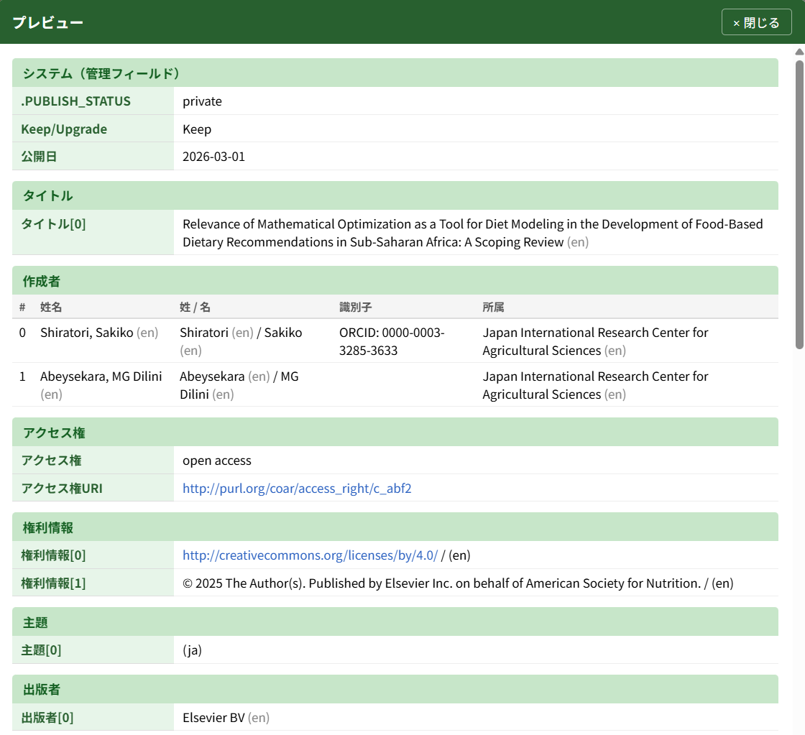
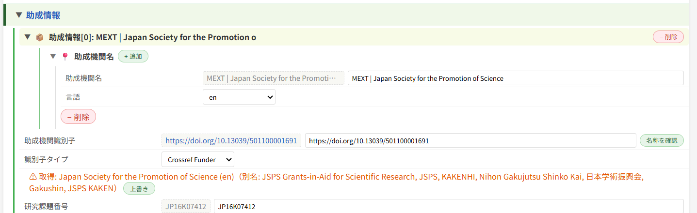

JAIRO Cloud インポート支援ツール - DOIからインポート用TSVを生成
DOIを入力するだけで Crossref・OpenAlex などのAPIから書誌情報を取得し、 JAIRO Cloud（WEKO3）への インポート用TSVファイルを生成します。識別子の検索やオープンアクセスポリシーの参照を支援する、機関リポジトリ担当者向けのツールです。



※ 本ツールはベータ版です。アイテムタイプ「デフォルトアイテムタイプ（フル）」形式のTSV生成に対応します。インポートは未検証のため、正しく取り込まれない場合があります。
何を解決するか
- 識別子（ORCID・ROR・KAKEN など）の検索時間を短縮します。
- メタデータ入力のサンプルを提示します。
- オープンアクセスポリシー（Open Policy Finder）を容易に参照できます。
- JAIRO Cloud 用インポートファイル（import.zip）の作成を支援します。
- 自機関所属研究者が発表した論文を OpenAlex から捕捉し、登録候補のDOIリストを抽出します。
2つの利用方法
Chrome拡張機能版
サイドパネルで3ツールを切り替えて利用。高機能版です。
- 閲覧中のページからのDOI自動取得
- JaLC DOI からのメタデータ取り込み
- KAKEN API による科研費課題の検索
- Open Policy Finder API による OAポリシー・エンバーゴ表示
- APIキー・初期値を設定ページでGUI管理
通常ブラウザ版
HTMLファイルを開くだけ。インストール不要です。
- Crossref DOI からのメタデータ取り込み
- ROR・OpenAlex・CiNii Research によるデータ補完
- OpenAlex による OA状況の表示
- JPCOARスキーマ 2.0 対応の入力・プレビュー
- インポート用TSVファイル生成
機能比較表を開く
| 機能 | 拡張機能版 | ブラウザ版 | 備考 |
|---|---|---|---|
| インストール不要 | — | ✅ | HTMLを開くだけ |
| OpenAlex による OA状況の表示 | ✅ | ✅ | Crossref DOI がある論文 |
| Open Policy Finder API による OAポリシー表示 | ✅ | — | CORS制約のため拡張機能版のみ |
| 閲覧中ページからのDOI自動取得 | ✅ | — | metaタグ/JSON-LDから取得 |
| Crossref DOI からのメタデータ取得 | ✅ | ✅ | |
| JaLC DOI からのメタデータ取得 | ✅ | — | Service Worker 経由が必要 |
| メタデータ編集UI・プレビュー・TSV出力 | ✅ | ✅ | JPCOARスキーマ2.0準拠 |
| OpenAlex による ORCID補完 / NCID自動取得 | ✅ | ✅ | |
| KAKEN XML API による科研費課題検索 | ✅ | — | CORS制約のため拡張機能版のみ |
| OpenSearch リポジトリ検索ツール | ✅ | — | 拡張機能版のみ |
| OpenAlex機関別著作検索（自機関研究者の著作の取得） | ✅ | ✅ | 自機関RORで発表論文を検索 |
| 自機関リポジトリでの登録有無の確認 | ✅ | — | CORS制約のため拡張機能版のみ（OpenSearchで照合） |
| APIキー設定（GUI / ソースコード） | GUI | 編集 | 拡張版は設定ページ、ブラウザ版は shared.js |
完全な比較表は README を参照してください。
4つのツール
① インポート用TSV生成ツール
DOIを入力して書誌情報を取得し、JPCOARスキーマ2.0準拠のメタデータを確認・編集してTSVを生成します。複数のDOIを連続取得して1ファイルにまとめて出力することもできます。

② 助成情報検索ツール
科研費課題番号・JGN課題番号や論文の謝辞から、助成機関識別子・助成機関名・プログラム情報・研究課題名を一括検索し、インポート用TSV形式で出力します。

③ OpenSearch検索ツール（拡張機能版のみ）
JAIRO Cloud 利用機関のリポジトリURL・タイトル・内容記述・資源タイプを条件に文献を検索し、書誌情報やファイルリンクとともに一覧表示します。
④ OpenAlex機関別著作検索
自機関の ROR ID を指定して、過去n日間（出版日ベース・既定90日）に発表された自機関所属研究者の論文を OpenAlex から検索します。登録対象として選んだDOIは「① インポート用TSV生成ツール」の一括取得へ受け渡せます。拡張機能版では各候補に自機関リポジトリでの登録状況バッジ（⚪登録済みの可能性大／🟡要確認／🟢未登録の可能性）を表示します。
導入方法
Chrome拡張機能版（推奨）
- Chromeウェブストアから「Chromeに追加」でインストールします。
- ツールバーの拡張機能アイコンをクリックすると、サイドパネルで起動します。
- 設定ページ（拡張機能のオプション）で必要に応じてAPIキーを設定します。
動作要件：Chrome 114以降（サイドパネルAPI対応）
通常ブラウザ版
README の手順に従って
make_jc_importer.html / shared.js / tsv_headers_template.js を保存し、
shared.js にAPIキーを設定してから HTML をブラウザで開きます（APIキーは任意）。
ドキュメント
📖 使い方ガイド — 基本的な使い方（STEP 1〜4）、バッチ処理、APIキー設定などを解説しています。初めての方はこちらからご覧ください。
作者から
JPCOARスキーマに沿ったメタデータの入力は、論文記載の情報を転記するほかに、識別子を調べて入力する、またオープンアクセスのポリシーの確認と適切なエンバーゴ設定など、図書・雑誌の目録入力とは異なる要素や難しさがあります。
特に助成情報の識別子は、即時オープンアクセス政策で主に求められる科研費補助金による研究成果の公開があるかどうかの識別のためには重要な情報ですが、多くの論文にはその番号のみで課題名までは載っていません。番号から検索して調べる必要があります。
「メタデータはCrossrefにあるのだから、それをそのまま利用すればいいのでは？」最初はそう考えていました。しかし、たとえば作成者の所属が機関名のみ、機関名＋学部名＋住所など出版社によって精粗はまちまちで、そのまま利用するとJPCOARスキーマに適合しないデータが生成されてしまいます。そこで、OpenAlexその他のAPIを活用して、より精度の高いメタデータを取得する仕組みを導入しました。科研費についても番号からURLと課題名を取り出せるようにしています。
作成には生成AIである Claude による大きな支援を受けています。しかし、JPCOARスキーマや各種APIの利用方法、実際のデータ例、何より入力する図書館員が何を求めているかは、作者が理解して生成AIに伝える必要があります。もし、行き届かない点があれば、それは作者の知見が不足していることによるものです。
このツールにより入力作業が少しでも楽になることを願っています。そして入力されたメタデータが、自機関の機関リポジトリやCiNii Researchだけでなく識別子により相互にリンクし、また全世界に流通させ、多くの人々が研究成果へアクセスできるようにすること、それが図書館員のミッションに新たに加わるものと信じています。